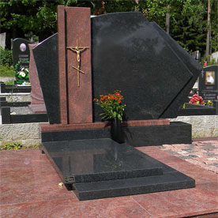

 Компания ООО "Байкальский камнерапиловочный завод" - известный в Иркутской области крупный производитель и поставщик изделий из натурального камня, в том числе ПАМЯТНИКОВ, и другой продукции из натурального камня для оформления мест захоронения (ОБЛИЦОВОЧНАЯ ПЛИТА, БРУСЧАТКА, БОРДЮРЫ, ЩЕБЕНЬ). У нас вы можете заказать памятники из мрамора, гранита, долерита в ценновой категории от 3400,00 за комплект (стела, подставка, цветник). Внешний вид монумента можно выбрать по каталогу или по эскизу. Наш многолетний опыт работы гарантирует заказчикам высокое качество и приемлемые сроки изготовления заказа.